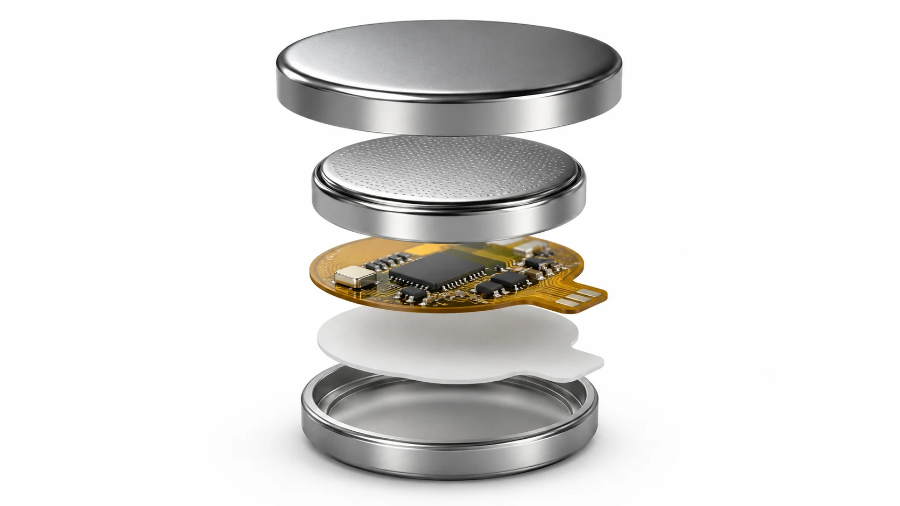

Protection built into the battery
The key battery that prevents car theft.
Lo-Key is a CR2032 battery designed to prevent the #1 method of car theft by shutting down an idle key fob and waking it automatically when you pick it up.
No app
No base station
No car modification

Concept renderingWhat is Lo-key?
A security layer hidden inside a familiar battery.
Inside Lo-Key, a low-power motion sensor circuit switches the key fob’s power to prevent theft without requiring changes to the vehicle.
Anti-TheftControls power to the key fob to prevent relay attacks.
CR2032-compatible formatDesigned for key fobs that use the most common battery size.
A complete packageNo wireless pairing, subscription, app, or base station.
May extend key-fob battery lifeBecause the fob is unpowered while sleeping, Lo-Key may reduce the overall energy the key uses.
Preventing Relay Attacks
A thief can’t relay a signal that isn’t there.
In theft via relay attack, equipment placed near your home carries your key’s wireless signal to the vehicle. The vehicle will be fooled into thinking the key is nearby - even when it's inside your house.
Lo-Key eliminates this issue: when the key sits still (like when on your desk), it cuts power to the fob. With the fob off, there is no powered key signal to extend.
Key inside your home
Signal is relayed
Vehicle sees a “nearby” key and starts
How to install
Install it once.
Then forget about it.
Lo-Key moves the protection into something your key already needs: its battery.
Replace
Install Lo-Key in place of the key fob’s standard CR2032 battery.
No wiring. No pairing.Sleep
After the key remains still, Lo-Key disconnects power from the fob.
The key stops answering relay equipment.Wake
Pick up the key and motion wakes the fob automatically. The car key behaves as usual.
Your normal routine stays normal.Security without another habit
Protection should not depend on remembering a pouch.
Faraday storage can be useful, but it only works when every key - including the spare - is put away every time.
Lo-Key avoids these issues:
- ✓Keep the key in your pocket, bag, drawer, or usual spot.
- ✓No box beside the front door and no daily routine to maintain.
- ✓Motion brings the key back automatically when you need it.
Who is Lo-Key for?
Not just a gadget for enthusiasts.
Designed as a replacement battery for cars that already use passive keyless entry.
Everyday owners
Anyone who enjoys walk-up unlocking but wants added protection while the key sits at home.
Targeted vehicles
Owners of frequently stolen SUVs, trucks, luxury vehicles, and other high-theft models.
Spare-key households
Protection for the extra fob that is easy to forget in a drawer, cabinet, or coat pocket.
Dealers & locksmiths
A simple security upgrade that can be offered during key service or routine battery replacement.
Customer reviews
What Lo-Key owners are saying.
Reviews are from verified purchases.
About Lo-Key
Canadian-built protection made to disappear into your routine.
Lo-Key began in 2026 with a straightforward idea: the safest action should be the one that requires no extra action at all.
We are a Canadian company based in Mississauga, Ontario. Our batteries are assembled and designed in Canada, with a focus on making everyday vehicle security easier to live with.
Canadian companyBuilt for Canadian drivers and beyond.
Mississauga, OntarioDesigned and developed in the Greater Toronto Area.
Assembled in CanadaBattery design and assembly completed in Canada.
Started in 2026A new company focused on a very old problem: stolen cars.
Common questions
The simple version.
Yes. Picking up or carrying the key creates motion, which wakes the fob before you use it. Lo-Key is designed to preserve the normal pocket-key experience.
Lo-Key is being designed for key fobs that use a CR2032 battery. Battery compartments and fob power requirements vary, so confirmed compatibility should be checked before ordering.
No. Lo-Key is intended to reduce exposure to key-fob relay attacks by removing power from an idle fob. It is one layer of security and does not prevent theft methods that do not depend on relaying the key.
Potentially. The key fob draws little or no power from Lo-Key while it is asleep, which may reduce the fob’s overall energy use. The real improvement will depend on the vehicle key, how often it is carried, and how much time it spends motionless.
No. The motion sensing is local to the battery and is used only to decide whether the key fob should be powered. There is no app, cloud account, GPS, or wireless connection.